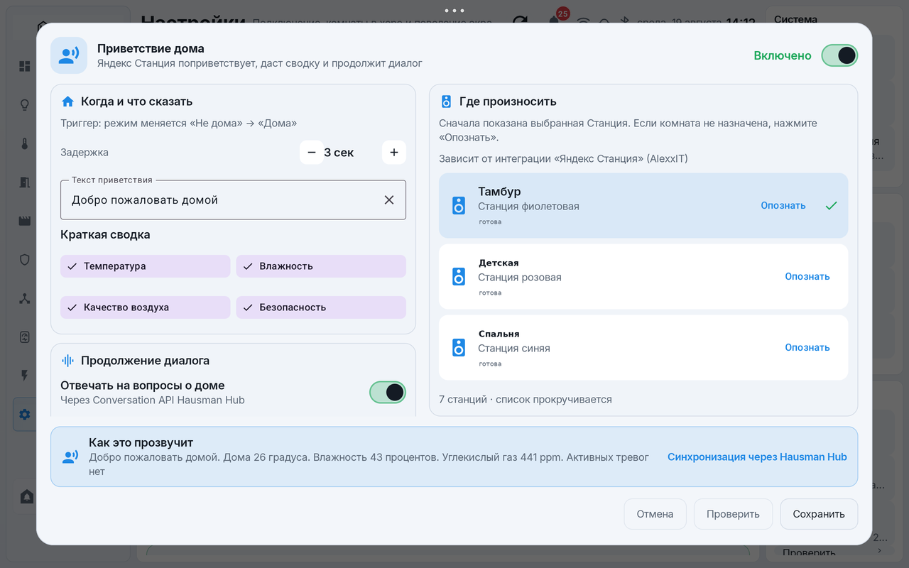

Hausman
Hausman
Hausman - дом,
который понимает
Hausman - это система для умного дома на базе Home Assistant: серверный модуль Hausman Hub и спокойная планшетная панель. Климат, освещение, энергия, сценарии, безопасность и домофон собраны в одном месте, которое всегда под рукой на стене или на столе.
Все данные дома остаются в вашем Home Assistant. Внешнего облака у Hausman нет: панель работает внутри домашней сети и разговаривает только с вашим сервером.
Что такое Hausman
Умный дом обычно размазан по десяткам экранов Home Assistant: климат в одном месте, счётчики в другом, сценарии в третьем. Hausman собирает дом в единую понятную картину и делает её удобной для всей семьи, а не только для человека, который всё это настраивал.
Система состоит из двух частей. Модуль Hausman Hub живёт внутри Home Assistant и знает модель дома: комнаты, устройства, цели климата, расписания, сценарии и правила безопасности. Приложение Hausman для Android-планшета показывает этот дом крупными карточками и даёт управление одним касанием. Та же модель доступна и в браузере - как отдельная страница панели в интерфейсе Home Assistant.
Важная деталь: Hausman не заменяет Home Assistant, а стоит поверх него. Устройства, связи и автоматики остаются в вашем сервере, поэтому дом продолжает работать, даже если планшет выключен.
Как это устроено
1. Home Assistant остаётся центром
Датчики, реле, кондиционеры и счётчики подключены к вашему серверу Home Assistant, как и раньше. Hausman ничего не переносит во внешние сервисы и не требует регистрации.
2. Модуль Hausman Hub внутри сервера
Модуль устанавливается в Home Assistant из каталога HACS. Он собирает модель дома, хранит настройки климата и расписания, выполняет команды строгими локальными вызовами и честно сообщает, что получилось, а что нет.
3. Панель на планшете и в браузере
Планшет на стене и страница в боковом меню Home Assistant показывают одну и ту же модель дома: настройка хранится на сервере, поэтому экраны не расходятся. Планшет работает в режиме киоска и просыпается, когда к нему подходят.
Команды от панели идут только через локальную сеть и только из заранее разрешённого набора: планшет не может передать серверу произвольную команду. Каждая операция получает квитанцию: подтверждена наблюдением, ожидает или честно отклонена.
Что умеет Hausman
Весь дом на одном экране
Главная собирает состояние дома целиком: погода, комнаты, климат, энергия, качество воздуха, избранные сценарии, ближайшие события и тревоги. Всё важное видно с первого взгляда, без листания меню.
Климат по комнатам
Цели температуры и влажности для каждой комнаты, дневные и ночные профили, расписание и временная температура. Межсезонный режим следит за улицей и реагирует на открытые окна.
Энергия под контролем
Мощность, ток и напряжение по каждому источнику, история потребления за день, неделю, месяц и год, а также показания счётчика с напоминаниями о передаче.
Комнаты и устройства
Каталог всех устройств дома по комнатам: свет, шторы, медиа, техника, датчики. Видно, что на связи, а что отвалилось, и управление открывается одним касанием.
Сценарии и безопасность
Любимые сценарии запускаются прямо с главной, а собрать новый можно в пошаговом редакторе без технических терминов. Тревоги о протечках, дыме и газе показываются отдельными карточками.
Домофон в один тап
Дверь открывается кнопкой с любого экрана планшета. Реле удерживается сервером ровно 15 секунд и отпускается само, даже если связь оборвалась на середине.
Голосовой помощник
Яндекс Станция встречает вас дома короткой сводкой и отвечает на вопросы о доме: что открыто, какой воздух, всё ли спокойно. Подробности - в разделе «Голос и Яндекс».
Локально и прозрачно
Система не передаёт данные разработчику или третьим лицам, в ней нет рекламы, аналитики и трекеров. Токены хранятся в защищённом хранилище планшета. Подробности - в Политике конфиденциальности.
Климатический контур
Главная сила Hausman - климат, который не нужно программировать. Вы задаёте каждой комнате цель по температуре и влажности, а контур сам решает, когда охлаждать, греть или увлажнять, и бережёт оборудование от лишних включений.

Решения по комнатам, а не по приборам
Контур работает с комнатой целиком: кондиционеры, радиаторные термоголовки, увлажнители, тёплый пол, вытяжки и очистители объединяются с датчиками температуры и влажности в один контур комнаты. Если комната или прибор отвалились, соседние комнаты работают как раньше, а карточка честно показывает состояние: «готово», «работает с ограничениями», «недоступно» или «расчёт не выполнен».
Режимов три: «Наблюдение» (контур только следит), «Автоматически» (управляет) и «Выключен». Право управления контур получал постепенно: сначала одна пробная комната, затем по одной комнате, и только когда все защиты согласны.
День и ночь по расписанию
У каждой комнаты два профиля, «День» и «Ночь», со своими целями. Контур сам переключает их по расписанию, проверяет его каждую минуту и заранее показывает точное время следующей смены. Разовая «временная температура» действует до ближайшей смены профиля и не портит сохранённые настройки.
Тонкие цели
Температура задаётся от 18 до 28 °C с шагом 0,5 °C, влажность - от 30 до 70 % с шагом 5 %. Характер работы на выбор: «мягкая», «обычная» или «быстрая» стратегия.
Окна и отсутствие важнее целей
Порядок решений зафиксирован: сначала «никого нет дома», затем защитные блокировки и свежесть показаний, и только потом обычная автоматика. Открытое окно выбирает защитную остановку, а увлажнитель не работает, пока окно не подтверждённо закрыто.
Техника служит дольше
Охлаждение начинается при превышении цели на 0,7 °C, работающий кондиционер мягко удерживает комнату в пределах 0,3 °C днём и 0,5 °C ночью, а минимальные циклы (8 минут работы, 6 минут паузы) защищают компрессор от частых пусков. Слабое охлаждение усиливается постепенно, без резких скачков.
Межсезонье
Особый режим отдыха кондиционеров: контур смотрит на улицу (порог от 5 до 35 °C), держит запас включения охлаждения (1-4 °C), умеет выключать кондиционеры при открытых окнах и знает необязательные даты начала и конца сезона.
Каждая команда с квитанцией
На любое изменение контур отвечает квитанцией: что подготовлено, принято и подтверждено наблюдением. Ответ «успех» без подтверждения датчиком выполнением не считается. Каждые 5 минут план сравнивается с фактом: любое расхождение блокирует расширение управления.

К климату можно подключить ИИ
В панели есть вкладка «Умный помощник»: раз в два часа (и по кнопке обновления) модуль отправляет обезличенный снимок климата - комнаты, цели, окна, сезон, присутствие и уличную температуру, без адресов и имён устройств - в OpenAI-совместимый сервис и показывает рекомендации и риски.
Помощник - советник, а не автопилот: команд устройствам у него нет в принципе. Поддерживаются пресеты DeepSeek и OpenAI или собственный endpoint, причём разрешён только HTTPS либо адрес внутри домашней сети.
Как это выглядит в жизни:
- Ночью спальня держит свою ночную цель тише и мягче, а утром контур сам возвращается к дневной - в карточке заранее видно, во сколько смена.
- Открыли окно проветрить - климат в комнате встаёт на защитную паузу сам и возобновляется, когда окно закрыли.
- Ушли из дома - контур безопасно останавливает оборудование, даже если кто-то только что крутил цель вручную.
- Захотелось прохладнее на час - задали временную температуру, и расписание она не сломает.
Конструктор сценариев
Сценарий собирается по шагам на обычном русском: без entity_id, YAML и технических терминов. Сценарии хранятся и выполняются сервером, поэтому работают и с выключенным планшетом.

Каталог с честными классами
Каждый сценарий знает свой класс: ручной, автоматический, гибридный (сам работает и запускается кнопкой) или системный. Каталог фильтруется восемью чипами: все, на главной, включённые, отключённые и по классам. На карточке видно, что делает сценарий и когда он менялся в последний раз.

Шесть шагов
«Основное», «Когда», «Если», «Что сделать», «Проверка», «Публикация». Полоса шагов с отметками видна сверху, к любому шагу можно вернуться без потерь: готовность считается из черновика и ошибок проверки.
Устройство выбирается из отдельного списка с поиском и группировкой «комната - тип», а числовые подсказки (диапазон, шаг, единицы) приходят от сервера, а не выдумываются клиентом.
Когда и если
Запуск: вручную, по времени, при изменении устройства, на восходе или закате со смещением в минутах, по присутствию дома или по событию с фильтром. Условия: состояние устройства, промежуток времени, присутствие, дни недели. Сравнения: равно, не равно, выше, ниже, изменилось.
Что сделать
Управление устройством, пауза до суток, запуск другого сценария, уведомление или действие центра. Режим выполнения - «один запуск», «перезапуск» или «очередь»: повторное срабатывание не гоняет тот же сценарий в том же состоянии.
Проверка перед публикацией
Перед сохранением сценарий собирается в одну понятную строку «Когда ... · Если ... · Что сделать: ...», а кнопка «Пробный запуск» прогоняет его без реальных команд дому.
Живой пример
«Свет по движению» в коридоре: после заката или при освещённости до 400 лк свет включается сам, яркость плавно меняется от 100 % вечером до 25 % в полночь и обратно к восходу, а таймер продлевается каждым новым движением.
Голос и Яндекс
К дому подключаются Яндекс Станции через интеграцию «Яндекс Станция» (AlexxIT): дом встречает вас голосом и отвечает на вопросы о себе.
{kind=link}

Приветствие дома
Когда режим меняется с «Не дома» на «Дома», выбранная Станция ждёт настраиваемую паузу (0-60 секунд), ещё раз проверяет, что вы действительно дома, и ровно один раз произносит приветствие со сводкой. Блоки сводки включаются по одному: температура и влажность по комнатам, качество воздуха, безопасность. Текст приветствия свой, до 180 символов.
Станций в списке может быть несколько: видно, какая на связи, кнопка «Опознать» подаёт звук на выбранную, а «Проверить» проигрывает фразу без смены режима дома. Внизу диалога сразу видно, как это прозвучит.
Вопросы о доме
Диалог понимает бытовые вопросы: «что ты умеешь», «всё ли спокойно», «нет ли протечек», «что сейчас открыто», «какие батарейки садятся», «какой воздух», «какая температура в спальне». Ответы идут через Conversation API Hausman Hub, а неизвестный вопрос передаётся штатному помощнику Home Assistant.
Честные ответы
Качество воздуха оценивается по CO₂: ниже 800 ppm - «хорошее», до 1200 - «допустимое», выше - «требует проветривания». Если датчик молчит, помощник прямо говорит, что данных нет, а не выдумывает цифру.
Настройки
Всё настраивается с планшета, без клавиатуры и конфигов. Те же разделы есть и в панели Home Assistant.

Подключение без паролей в открытом виде
Сервер находится автопоиском по сети. Вход - через окно авторизации Home Assistant или долгоживущий токен; токен шифруется аппаратным хранилищем планшета (Android Keystore) и не попадает в резервные копии. Подключение возможно только по HTTPS: незашифрованный адрес отклоняется с объяснением. Доступ отзывается одной кнопкой.
Экран по присутствию и киоск
Планшет сам просыпается, когда к нему подходят (датчики присутствия, любой или все сразу), приглушает и гасит экран с задержками. После простоя (по умолчанию 5 минут) включается киоск: лишних меню нет, выход - двойным тапом. При заряде ниже 8 % планшет предупреждает звуком.
День, ночь и глубокая ночь
Свои часы и своя громкость для каждого времени суток (по умолчанию 60 / 30 / 15 %), плюс учёт датчиков освещённости. Тема интерфейса переключается отдельно.
Комнаты на главной
Состав комнат в херо главной выбирается галочками: частые - перед глазами, остальные не мешают.
Домофон и опасные действия
Домофон открывается в один тап из любого экрана, реле удерживается сервером 15 секунд и отпускается само. Опасные действия (вода, линии энергии) защищены подтверждением, а по желанию - PIN-кодом.
Журнал диагностики
250 последних записей о работе системы с копированием в один тап: адреса и идентификаторы в журнале маскируются автоматически, его не стыдно отправить в поддержку.
Климат и голос
Из настроек же открываются «Межсезонье» (см. Климатический контур) и «Приветствие дома» (см. Голос и Яндекс).
Приложение для планшета
Каждый раздел открывается из левого меню и отвечает за свою часть дома. Ниже - все разделы с настоящими экранами приложения (имена устройств и адреса на снимках обезличены).

Главная
Утренний обзор всего дома: сколько комнат и устройств на связи, какие автоматизации активны, погода за окном, температура и влажность по дому, качество воздуха и расход энергии прямо сейчас.
Внизу - избранные сценарии и устройства, которые нужны чаще всего. Справа - последняя активность: что система сделала и что подтвердилось.

Освещение
Свет по каждой комнате отдельно: сколько линий включено, что выключено, что потеряло связь. Карточка комнаты открывает её светильники, а справа живут быстрые действия - выключить всё одним касанием.
Климат
Комнаты с целями температуры и влажности: видно текущее состояние, режим и оборудование каждой комнаты - кондиционеры, термоголовки, увлажнители и тёплый пол.
Справа - сводка микроклимата и список «Требует внимания», например когда оборудование комнаты перестало отвечать.

Комнаты
Дом по комнатам: каждая карточка показывает климат, свет и устройства комнаты, а также честную отметку о связи. Комната открывается целиком одним касанием - без поиска по меню.

Медиа
Колонки и телевизоры по комнатам: что сейчас играет, что на паузе, что недоступно. У колонки видны её возможности, а громкость и воспроизведение управляются прямо с карточки.

Энергия
Энергия сейчас: мощность, ток и напряжение по выбранным источникам и накопленное за сутки. Ниже - график потребления за 24 часа и карточки физических источников с кнопкой отключения.
Опасные действия защищены: отключение линии спрашивает подтверждение, а результат возвращается честной квитанцией.
Сценарии
«Весь свет выключить», «Вне дома», «Закрыть воду» - сценарии запускаются одной кнопкой, отключаются переключателем и помечаются звёздой для главной. Видно, что делает каждый сценарий и когда он менялся в последний раз.
Ещё экраны приложения
Редактор сценария: триггеры, условия и действия собираются по шагам, есть пробный запуск
Настройки: подключение к серверу, состав главной, технический журнал с маскировкой адресов

Опасные команды требуют подтверждения

Домофон: открытие двери с подтверждением

Сценарий «Вне дома» показывает, что именно будет сделано
Панель в Home Assistant
Модуль Hausman Hub добавляет в боковое меню Home Assistant свою страницу. В ней тот же дом: главная сводка, климат, комнаты, устройства, энергия, безопасность, сценарии, медиа, освещение и настройки. Удобно для настройки с компьютера, когда планшет на стене.

Главная: климат, цель, избранные сценарии, энергия и погода в одной сводке
Климат: обзор оборудования по типам и цели по комнатам

Комнаты: все помещения с температурой и влажностью

Устройства: категории дома и честные списки «без связи» и «без комнаты»

Энергия: нагрузка, график суток, источники и карточка на главную

Безопасность: контуры протечек, окон, движения, камер и охраны

Сценарии: запуск и изменение без технических сущностей

Медиа: вся аудио- и видеотехника по комнатам

Освещение: комнаты и устройства света с состоянием связи

Настройки: комнаты, подключение, домофон, интерфейс и диагностика
Загрузка
Открытая часть проекта - модуль Hausman for Home Assistant. Он устанавливается в Home Assistant из каталога HACS и отдаёт панелям модель дома, климат, энергию и команды. Приложение для планшета пока распространяется в закрытом тестировании и не опубликовано в магазинах.
Поддержка
Вопросы, идеи и сообщения о проблемах принимаются в разделе Issues репозитория проекта на GitHub.
Совет: журнал диагностики из приложения можно отправить через системное меню «Поделиться». Адреса и идентификаторы устройств в нём маскируются автоматически.